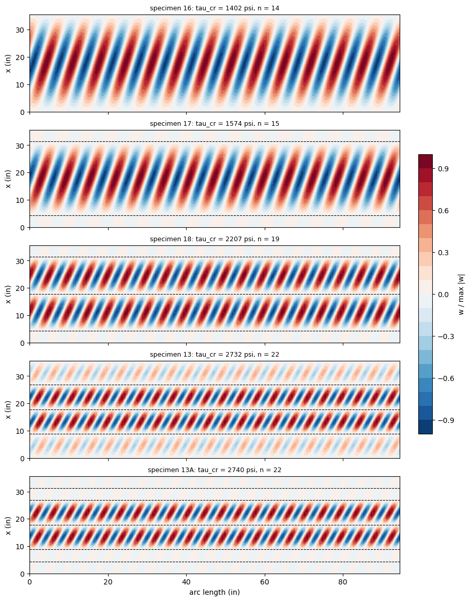

Torsional buckling of ring-stiffened cylinders: Moore and Wescoat (1944), Table I#
Moore and Wescoat [1] tested in torsion 24S-T aluminium-alloy cylinders of mean diameter \(D = 30.08\) in, 36 in long overall, with a sheet \(t = 0.020\) in thick: specimen 16 without rings, specimens 17, 18, 13 and 13A with \(1/2 \times 1/2\) in solid ring stiffeners inside the skin. Their Table I (p. 25) gives the average observed shear-buckling stress and the theoretical one, from Donnell’s formula for hinged edges [2]. In the specimens with rings only, buckling is also the failure ([1] p. 5).
This notebook computes the first buckling stress of the perfect cylinders with panels.multidomain.MultiDomain: the skin is made of curved Kirchhoff-Love domains with the Sanders-Koiter kinematics, and each ring is a web of annular-sector plate domains connected to the inner surface of the skin. The stiffened specimens 19, 14, 20, 15 and 21 of the same report are in the notebook moore1944_stiffened_cylinders. The same cases are modelled with BFSC finite elements in the notebook
moore1944_ring_cylinders of the bfsccylinder package; its values are compared in Section 7.
Lengths in in, forces in lbf, stresses in psi, torques in ft-lb as in [1].
[1]:
import json
import time
import numpy as np
import matplotlib.pyplot as plt
import panels
import moore1944_utils as mu
from moore1944_utils import print_table, rel
%matplotlib inline
print('panels', panels.__version__)
SPECS = ['16', '17', '18', '13', '13A']
panels 0.15.0
1. Data#
All values are from [1]; “p.” is the printed page (the PDF page is two more).
quantity |
value |
source |
|---|---|---|
material, 24S-T |
\(E = 10.5 \times 10^6\) psi, \(\nu = 1/3\) |
|
mean diameter, overall length |
\(D = 30.08\) in, 36 in |
|
sheet thickness |
\(t = 0.020\) in |
Table I |
end bulkheads |
3/4 in steel plates, the shell screwed to them |
|
rings |
\(1/2 \times 1/2\) in solid 24S-T bars, inside the skin, joined with 3/16 in pins |
|
ring stations |
Fig. 5, from the centres of the end bulkheads, 35 5/8 in apart |
Fig. 5 |
buckled section, observed and theoretical stresses |
Table I |
|
stress and torque |
\(\tau = 0.422\,T\) (psi, ft-lb) for \(t = 0.020\) in, i.e. \(T = \tau \pi D^2 t/24\) |
Fig. 5, note 6; p. 7 |
The bays below are those of Fig. 5: e.g. specimen 13A has rings at 4 5/16, 8 13/16, 17 13/16, 26 13/16 and 31 5/16 in from the centre of the first bulkhead. Specimens 13 and 13A buckled in different sections: 13 in the end sections (8.81 in), 13A in the intermediate ones (9.00 in, Fig. 5). Every specimen has a longitudinal stiffener on the seam of the sheet, “not considered effective in increasing shear-buckling resistance” (p. 4, footnote); it is not modelled.
[2]:
rows = []
for s in SPECS:
d = mu.SPECIMENS[s]
rows.append([s, d['t'], ' | '.join('%g' % b for b in d['bays']), d['panel'], d['obs'],
d['theory']])
print_table(rows, ['spec', 't (in)', 'bays (in)', 'buckled section L (in)',
'observed (psi)', 'theory [1] (psi)'])
spec t (in) bays (in) buckled section L (in) observed (psi) theory [1] (psi)
---- ------ ----------------------------------- ---------------------- -------------- ----------------
16 0.02 35.625 35.62 1110 1325
17 0.02 4.3125 | 27 | 4.3125 27.00 1280 1520
18 0.02 4.3125 | 13.5 | 13.5 | 4.3125 13.50 1710 2210
13 0.02 8.8125 | 9 | 9 | 8.8125 8.81 2310 2870
13A 0.02 4.3125 | 4.5 | 9 | 9 | 4.5 | 4.3125 9.00 2570 2770
2. Moore’s theoretical column#
Moore and Wescoat computed the theoretical stresses of Table I with Donnell’s formula for an unstiffened cylinder of length \(L\) with hinged ends [2], as printed in their appendix ([1] p. 23), valid for \(L^2 t/D^3 < 5.2\):
with \(L\) the length of the buckled section, centre to centre of the rings. The rings are taken as hinged supports.
[3]:
rows = []
for s in SPECS:
d = mu.SPECIMENS[s]
L = float(d['panel'])
tau0 = mu.donnell_tau(L, d['t'])
rows.append([s, L, '%.1e' % (L**2*d['t']/mu.D**3), '%.0f' % tau0, d['theory'],
'%+.1f' % rel(tau0, d['theory'])])
print_table(rows, ['spec', 'L (in)', 'L^2 t/D^3', 'tau0 (psi)', 'Table I', 'diff %'])
spec L (in) L^2 t/D^3 tau0 (psi) Table I diff %
---- ------ --------- ---------- ------- ------
16 35.62 9.3e-04 1323 1325 -0.2
17 27.0 5.4e-04 1525 1520 +0.3
18 13.5 1.3e-04 2204 2210 -0.3
13 8.81 5.7e-05 2811 2870 -2.1
13A 9.0 6.0e-05 2775 2770 +0.2
The formula reproduces the column of Table I to 0.4 %, except specimen 13, 2.1 % below the printed 2870 psi; no other length or thickness of the report gives 2870 psi, and the printed value is kept as Moore’s.
3. The model#
Domains. The skin is split along the axis at the ring stations, one bay per ring spacing, and along the circumference into nsec equal sectors. Each domain is a curved Shell of the model cylshell_clpt_sanders (Kirchhoff-Love, Sanders-Koiter kinematics) whose fields are series of Bardell’s hierarchical functions [3]; consecutive domains are connected with 'SSxcte' and 'SSycte', the last sector to the first one to close the cylinder.
Rings. Each ring is a web of annular-sector domains of the model annular_clpt_donnell, one per skin sector, of radial height 1/2 in and thickness 1/2 in (the bar), closed with 'SSycte'. Its outer edge, at the radius of the inner surface of the skin \(R - t/2\), is connected to the end \(x = a\) of the bay before the ring with
dict(p1=skin, p2=ring, func='BFxcte', xcte1=skin.a, xcte2=0., face='lower')
which ties the four displacements and the rotation about the circumferential axis of the edge of the web to those of the inner surface of the skin (Kirchhoff-Love kinematics and the Sanders-Koiter term \((1 + z/r)\,v\) at the face). This is a continuous bond: the pins of [1] (Fig. 1) are not represented. The plate theory is a coarse approximation for a bar as thick as it is high: it represents the bending of the ring in its plane (membrane stiffness of the web) and out of it (bending of the web) and the eccentricity of the ring; its torsion is that of a Kirchhoff plate. Rigid ring supports, \(v = w = 0\) along the ring line with \(w_{,x}\) free, are a sensitivity (Section 6).
Ends. The shell is screwed to 3/4 in steel bulkheads ([1] Fig. 1). The baseline holds \(u = v = w = 0\) at both ends with \(w_{,x}\) free, the hinged edges of Moore’s theory; clamped ends and \(u\) free are sensitivities. The report does not state the end fixity; it says (p. 9) that clamped edges would raise the theoretical values by 10 to 12 %.
Load. A torque \(T\) on a perfect circular cylinder gives the uniform membrane shear flow \(N_{xy}
= T/(2 \pi R^2)\) in the skin; the rings carry no stress. The pre-buckling state is therefore exactly the constant \(N_{xy}\), given to the skin domains as their attribute Nxy = 1 lbf/in, and the critical shear flow is the lowest load multiplier \(\lambda\) of
with \(\boldsymbol{Z}\) the basis of the null space of the connections (default conn_method of MultiDomain, 'null-space'), so that \(\tau_{cr} = \lambda/t\). Under torsion the load multipliers come in pairs \(\pm\lambda\) and the modes in pairs of the same \(\lambda\) (rotated around the axis); only the sense matters for an anisotropic shell. Section 5 checks the constant shear flow against a prescribed rotation of one end with the linear static pre-buckling state.
Runs. The analyses are run on a cluster node by the script moore1944_runs.py of this folder (stage 1), with the builders of moore1944_utils.py, which writes results/moore1944_stage1.json; this notebook reads that file. Meshes:
mesh |
sectors |
terms per sector along the circumference |
terms per inch along the axis (min. 6, max. 30 per bay) |
terms across the ring webs |
|---|---|---|---|---|
A |
8 |
12 |
0.8 |
6 |
B |
12 |
14 |
1.0 |
6 |
C |
12 |
18 |
1.3 |
8 |
[4]:
with open('results/moore1944_stage1.json') as f:
RES = json.load(f)
errors = [r for r in RES if 'error' in r]
print('%d cases, %d errors' % (len(RES), len(errors)))
for r in errors:
print(r['case'], r['spec'], r['error'])
res = {(r['case'], r['spec']): r for r in RES if 'error' not in r}
36 cases, 0 errors
4. Convergence#
\(\tau_{cr}\) (psi) of the first mode, its number of full circumferential waves \(n\) in the longest bay, and the change from the previous mesh.
[5]:
rows = []
for s in SPECS:
prev = None
for mesh in 'ABC':
r = res[('mesh ' + mesh, s)]
ch = '' if prev is None else '%+.2f' % rel(r['tau'], prev)
rows.append([s, mesh, r['domains'], r['size_r'], '%.1f' % r['tau'], ch, r['waves'],
'%.0f' % r['seconds']])
prev = r['tau']
print_table(rows, ['spec', 'mesh', 'domains', 'independent constants', 'tau_cr (psi)',
'change %', 'n', 's'])
spec mesh domains independent constants tau_cr (psi) change % n s
---- ---- ------- --------------------- ------------ -------- -- ---
16 A 8 7232 1401.7 14 12
16 B 12 13776 1401.6 -0.01 14 25
16 C 12 18096 1401.6 -0.00 14 31
17 A 40 10480 1574.7 15 40
17 B 60 20928 1574.4 -0.02 15 140
17 C 60 31704 1574.4 -0.00 15 416
18 A 56 11336 2216.2 19 62
18 B 84 22908 2207.4 -0.39 19 241
18 C 84 38508 2207.3 -0.00 19 841
13 A 56 9800 2800.4 22 37
13 B 84 21084 2736.4 -2.29 22 285
13 C 84 37308 2731.6 -0.17 22 803
13A A 88 14072 2808.2 22 44
13A B 132 26868 2744.0 -2.29 23 350
13A C 132 44916 2739.8 -0.15 22 939
5. Cross-check: torque from a prescribed end rotation#
For specimen 18 (mesh B) the end \(x = L\) is rotated about the axis by \(\theta = 10^{-3}\), \(v =
\theta R\), with \(u = w = 0\) there and the other end held; the prescribed displacements are imposed exactly (pd_method='null-space'). The torque at load factor 1 is the reaction work-conjugate to the prescribed displacements divided by \(\theta\) (MultiDomain.reaction_pd), and the linear buckling analysis about the linear static state (MultiDomain.linear_buckling) gives the critical torque.
[6]:
r_rot = res[('end rotation', '18')]
r_cte = res[('mesh B', '18')]
GJ = mu.E/(2*(1 + mu.NU))*2*np.pi*mu.R**3*0.020
print('torque at theta = 1e-3: %.1f lbf in; G J theta/L = %.1f lbf in (thin-walled tube)'
% (r_rot['T']/r_rot['ev'][0]*12, GJ*1e-3/sum(mu.SPECIMENS['18']['bays'])))
print('tau_cr: end rotation %.2f psi, constant shear flow %.2f psi, difference %.4f %%'
% (r_rot['tau'], r_cte['tau'], rel(r_rot['tau'], r_cte['tau'])))
torque at theta = 1e-3: 47251.9 lbf in; G J theta/L = 47251.9 lbf in (thin-walled tube)
tau_cr: end rotation 2207.45 psi, constant shear flow 2207.45 psi, difference 0.0000 %
6. Sensitivity to the data that are not given#
Mesh B, one change at a time: clamped ends (\(w_{,x} = 0\) also); \(u\) free at the ends; rigid ring supports instead of the ring webs; the Donnell kinematics in the skin (cylshell_clpt_donnell).
[7]:
SENS = ['clamped', 'u free', 'rigid rings', 'Donnell skin']
rows = []
for s in SPECS:
base = res[('mesh B', s)]['tau']
row = [s, '%.1f' % base]
for name in SENS:
r = res.get((name, s))
row += ['%.1f (%+.1f %%)' % (r['tau'], rel(r['tau'], base)) if r else 'n/a']
rows.append(row)
print_table(rows, ['spec', 'baseline'] + SENS)
spec baseline clamped u free rigid rings Donnell skin
---- -------- --------------- --------------- --------------- ---------------
16 1401.6 1403.9 (+0.2 %) 1351.8 (-3.5 %) 1401.6 (+0.0 %) 1403.3 (+0.1 %)
17 1574.4 1574.5 (+0.0 %) 1574.4 (-0.0 %) 1562.5 (-0.8 %) 1575.8 (+0.1 %)
18 2207.4 2207.5 (+0.0 %) 2207.4 (-0.0 %) 2156.3 (-2.3 %) 2208.1 (+0.0 %)
13 2736.4 2738.6 (+0.1 %) 2697.7 (-1.4 %) 2653.6 (-3.0 %) 2736.7 (+0.0 %)
13A 2744.0 2744.0 (+0.0 %) 2744.0 (-0.0 %) 2667.0 (-2.8 %) 2744.6 (+0.0 %)
7. Comparison with Table I and with bfsccylinder#
\(\tau_{FE}\) is the first buckling stress of the perfect cylinder, mesh C, hinged ends (\(u = v = w
= 0\)). The bfsccylinder values are those of the notebook moore1944_ring_cylinders of that package (BFSC cylinder elements of Sanders-type kinematics, ring as a band of skin elements with the laminate skin + bar, same ends, Bloch sectors): 1403, 1592, 2252, 2810 and 2829 psi for specimens 16, 17, 18, 13 and 13A.
[8]:
BFSC = {'16': 1403, '17': 1592, '18': 2252, '13': 2810, '13A': 2829}
rows = []
for s in SPECS:
d = mu.SPECIMENS[s]
r = res[('mesh C', s)]
rows.append([s, d['panel'], r['waves'], '%.0f' % r['tau'], '%.0f' % r['T'], d['obs'],
'%.0f' % mu.torque_ftlb(d['obs'], d['t']), d['theory'],
'%+.1f' % rel(r['tau'], d['obs']), '%+.1f' % rel(r['tau'], d['theory']),
BFSC[s], '%+.1f' % rel(r['tau'], BFSC[s])])
print_table(rows, ['spec', 'L (in)', 'n', 'tau_FE (psi)', 'T_FE (ft-lb)', 'observed (psi)',
'observed (ft-lb)', 'theory [1]', 'FE vs obs %', 'FE vs theory %',
'bfsccylinder', 'panels vs bfsc %'])
spec L (in) n tau_FE (psi) T_FE (ft-lb) observed (psi) observed (ft-lb) theory [1] FE vs obs % FE vs theory % bfsccylinder panels vs bfsc %
---- ------ -- ------------ ------------ -------------- ---------------- ---------- ----------- -------------- ------------ ----------------
16 35.62 14 1402 3320 1110 2629 1325 +26.3 +5.8 1403 -0.1
17 27.00 15 1574 3729 1280 3032 1520 +23.0 +3.6 1592 -1.1
18 13.50 19 2207 5229 1710 4051 2210 +29.1 -0.1 2252 -2.0
13 8.81 22 2732 6471 2310 5472 2870 +18.3 -4.8 2810 -2.8
13A 9.00 22 2740 6490 2570 6088 2770 +6.6 -1.1 2829 -3.2
8. Buckling modes#
Radial displacement \(w\) of the first mode on the unrolled skin (mesh C, arbitrary scale); the dashed lines are the rings.
[9]:
fig, axes = plt.subplots(len(SPECS), 1, figsize=(9, 2.3*len(SPECS)), sharex=True,
constrained_layout=True)
for ax, s in zip(axes, SPECS):
r = res[('mesh C', s)]
mode = r['mode']
wmax = max(np.abs(np.array(W)).max() for W in mode['W'])
for X, S, W in zip(mode['X'], mode['S'], mode['W']):
cs = ax.contourf(np.array(S), np.array(X), np.array(W)/wmax,
levels=np.linspace(-1, 1, 21), cmap='RdBu_r')
x = 0.
for b in mu.SPECIMENS[s]['bays'][:-1]:
x += b
ax.axhline(x, color='k', ls='--', lw=0.8)
ax.set_ylabel('x (in)')
ax.set_title('specimen %s: tau_cr = %.0f psi, n = %d' % (s, r['tau'], r['waves']),
fontsize=9)
axes[-1].set_xlabel('arc length (in)')
fig.colorbar(cs, ax=axes, shrink=0.5, label='w / max |w|')
plt.show()

9. Discussion#
Convergence. The last refinement changes \(\tau_{cr}\) by 0.17 % or less (Section 4); the first mode has 14 to 22 full waves along the circumference, more than the wavelengths measured in [1] (Fig. 5: \(W = 9\) in for specimen 16, about 10.5 waves), as Moore and Wescoat also found against Donnell’s theory (p. 9).
Pre-buckling state. The prescribed end rotation gives the torsional stiffness of the thin tube, \(G J/L\) with \(J = 2 \pi R^3 t\), and the same buckling stress as the constant shear flow to \(10^{-6}\): the rings carry no stress before buckling, and the constant \(N_{xy}\) is the exact pre-buckling state.
Specimen 16 and Donnell’s formula. With \(u = v = w = 0\) at both ends the model is 5.8 % above Moore’s theoretical value; with \(u\) free at the loaded end it is 1352 psi, 2.2 % above Donnell’s 1323 psi. The end fixity is not given in [1]; clamping the ends (\(w_{,x} = 0\)) raises \(\tau_{cr}\) by 0.2 % only, whereas [1] (p. 9) expects 10 to 12 % for clamped edges.
Ring-stiffened specimens. The model is 3.6 % above to 4.8 % below Moore’s column, which takes each bay as an unstiffened cylinder with hinged ends. Rigid ring supports with \(w_{,x}\) free lower \(\tau_{cr}\) by 0.8 to 3.0 %: the ring webs restrain the rotation \(w_{,x}\) of the skin in addition to \(v\) and \(w\). Specimen 13 buckled in its end bays (8.81 in, Table I), the first mode of the model has its largest buckles in the two 9 in intermediate bays and smaller ones in the end bays (Section 8); its stress is 0.3 % below that of 13A, which buckled in the 9 in intermediate bays in the test and in the model. Moore and Wescoat explain the lower observed stress of 13 by a less uniform shear near the bulkheads (p. 9), which the model, with a uniform shear flow, does not have.
Test values. The observed stresses are 6.6 to 29 % below those of the perfect cylinders, within the range that [1] reports, 77 to 93 % of the theory (Table I); [1] attributes the difference to local out-of-roundness and initial buckles (p. 9), and the repeated tests of a specimen gave minima of 83 to 98 % of the maxima (p. 8).
bfsccylinder. The BFSC model gives 0.1 % (specimen 16) to 3.2 % (13A) more. The difference grows with the number of rings, which are modelled differently: here as annular plate webs on the inner face, there as bands of skin elements with the laminate skin + bar, whose Kirchhoff torsional stiffness is 2.4 times the St Venant value of the bar (bfsccylinder notebook); both ring models restrain the rotation of the skin.
Not represented. The pins joining the rings to the skin, the seam stiffener, the splices of the rings and the initial imperfections.
References#
Moore, R. L., and Wescoat, C., “Torsion Tests of Stiffened Circular Cylinders”, NACA ARR 4E31 (Wartime Report W-89), 1944: Table I p. 25, appendix p. 23, Figs. 1 and 5.
Donnell, L. H., “Stability of Thin-Walled Tubes under Torsion”, NACA Report 479, 1933 (as given in [1], p. 23).
Castro, S. G. P., and Donadon, M. V., “Assembly of semi-analytical models to address linear buckling and vibration of stiffened composite panels with debonding defect”, Composite Structures, 160, 2017, pp. 232-247, doi:10.1016/j.compstruct.2016.10.026.